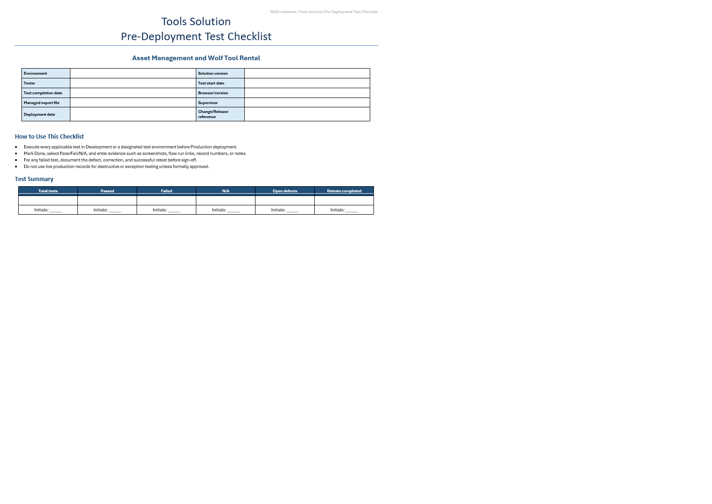

Designing a production-ready quality assurance strategy for enterprise Power Platform solutions.
Test Cases
Categories
Framework
Ready
The image below shows the cover page of the Enterprise Power Platform Testing Framework developed for tool inventory solution.
The complete framework contains approximately 130 individual test cases organized into 16 testing categories, covering functional testing, automation, security, deployment readiness, data integrity, and edge-case validation.
This is only the cover page.
The complete framework contains approximately 130 detailed test cases across 16 testing categories, including positive and negative testing, Power Automate validation, security testing, deployment readiness, data integrity, browser compatibility, and production sign-off.
Interested in seeing the complete testing strategy?
Project Overview
Building an enterprise Power Platform solution involves much more than delivering a working application. Before a solution can be deployed to production, every business process, automation, security role, integration, and user workflow must be validated to ensure reliability and reduce deployment risk.
To support the Wolf Tool Rental solution, I designed a comprehensive Enterprise Power Platform Testing Framework consisting of approximately 130 structured test cases organized into 16 testing categories. The framework provides a repeatable process for validating functionality, documenting evidence, verifying deployment readiness, and ensuring every release meets production-quality standards.
For the Wolf Tool Rental solution, I designed a comprehensive pre-deployment testing framework that validates every major component of the application before release. Rather than relying on informal testing, this framework provides a repeatable, traceable process for documenting results, capturing evidence, and ensuring issues are corrected before deployment.
Enterprise Power Platform solutions often contain dozens of interconnected components. A single modification can unintentionally affect business rules, Power Automate flows, Dataverse data, JavaScript, security permissions, or user experience.
Without structured testing, deployments become high-risk events that may introduce production outages, inconsistent data, or broken business processes.
This testing framework was created to minimize deployment risk through structured, repeatable validation.
I designed a structured testing framework consisting of approximately 130 individual test cases organized into logical testing categories.
Every test follows a standardized format that allows testing to be repeated across development, testing, staging, and production environments.
This structure provides complete traceability and produces consistent deployment documentation for every release.
Power Apps • Dataverse • Power Automate • Model-Driven Apps • JavaScript • Microsoft Approvals • Solution Checker • Managed Solutions • Security Roles • Application Lifecycle Management (ALM)
Beyond building Power Platform solutions, I focus on delivering software that is maintainable, reliable, secure, and production-ready.
This testing framework demonstrates my understanding of enterprise application lifecycle management, quality assurance, deployment planning, release readiness, security validation, and risk mitigation.
My objective is not simply to build applications that function correctly, but to deliver enterprise solutions that organizations can confidently deploy, maintain, and scale.